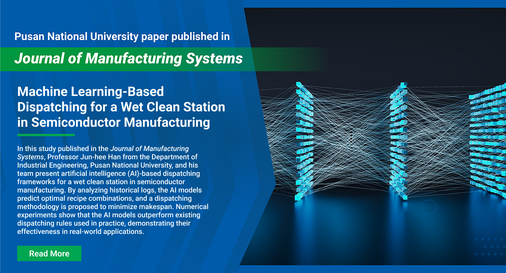
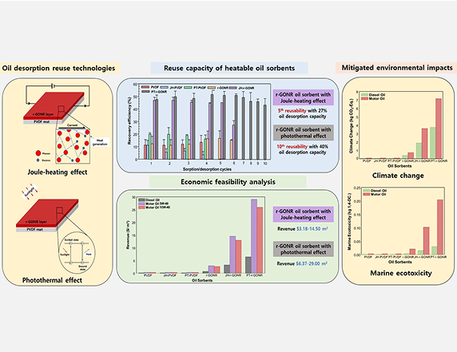
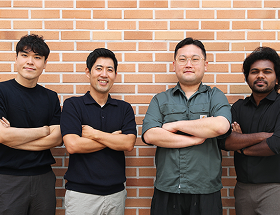
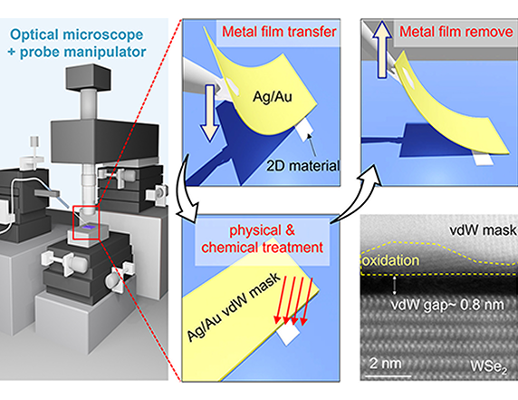
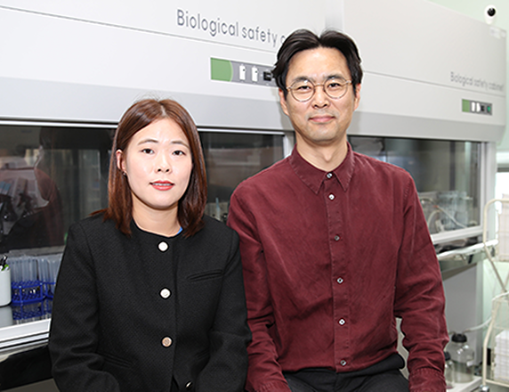
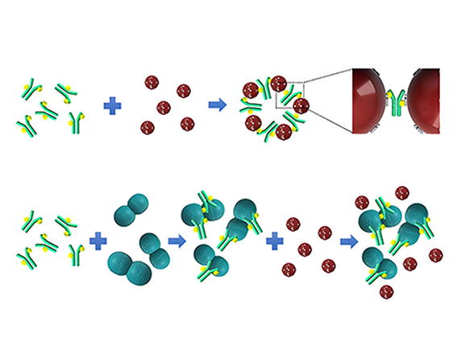

Newsletter


Joule and Photothermal Heating Techniques for Enhanced Oil Desorption and Economic Feasibility
Professor Sanghyun Jeong from the Department of Civil and Environmental Engineering and his team have introduced a heatable reduced graphene oxide nanoribbon-coated polyvinylidene fluoride (r-GONR/PVDF) oil sorbent for enhancing oil recovery. The sorbent, leveraging photothermal heating, significantly improves oil desorption by around 50% compared to conventional methods. It also demonstrates exceptional reusability, maintaining 40% desorption efficiency up to the 10th cycle. This approach not only enhances oil recovery but also provides economic and environmental benefits, making it a sustainable solution for oil desorption and reuse.
Read More

Highly Efficient Production of Biofuels and Biochemicals Using Supercritical CO₂ as Catalyst for Hydrolysis of Sugars
Professor Jungho Jae from the School of Chemical Engineering conducted research that highlights a breakthrough in the rapid and efficient depolymerization of cellulose into sugars for biofuel and biochemical production using supercritical CO₂ (scCO₂). Acting both as an acid catalyst and a reaction solvent, scCO₂ enabled ultra-fast solid catalytic hydrolysis of ball-milled cellulose with oxidized carbon catalysts, achieving ∼90% conversion and ∼85% sugar selectivity within 20 minutes under mild conditions. This approach significantly outperformed conventional methods with toxic, unrecyclable homogeneous catalysts.
Read More

Revolutionizing 2D Material Engineering Using Robust van der Waals (vdW) Metal Mask
Professor Ji-Hee Kim from the Department of Physics introduces the vdW metal mask, a novel approach leveraging bondless interactions for ultra-precise, non-destructive engineering of 2D materials. Using a striped ultra-flat Ag/Au film and probe tip-assisted transfer, the technique achieves residue-free, sub-1 μm resolution treatments without lithography. The vdW metal mask's versatility supports gas, liquid, solid, plasma, and light-based processes, offering ultra-clean surfaces and robustness under harsh conditions.
Read More

ROS-Sensing-Based Nrf2 Inhibition Potentiates Anti-Tumor Immunity
In their new study, Professor Changwan Hong from the Department of Anatomy and Department of Convergence Medical Science uncovers the role of reactive oxygen species (ROS) as a responsive factor for nuclear factor erythroid 2-related 2 (Nrf2) in suppressing cytotoxic T lymphocyte (CTL) functions within the immunosuppressive tumor microenvironment. Nrf2 deficiency in CTLs enhances their resistance to ROS, sustains their effector functions, and promotes anti-tumor responses in immune cells. These findings suggest Nrf2 as a promising target for T cell-based immunotherapy against solid tumors.
Read More

Rapid Detection of
Enterococcus
in Fresh and Marine Waters
Professor Eun-Hee Lee from the Department of Microbiology and her team have developed a novel interference-resistant assay for detecting enterococci, a key indicator of fecal contamination in environmental samples. The assay uses gold nanoparticles (AuNPs), streptavidin, and a biotinylated
Enterococcus
antibody to detect enterococci via changes in AuNP aggregation, measurable by spectrophotometry. It demonstrated high sensitivity (10–10⁷ CFU/mL), specificity for enterococci, and resistance to interference from other bacteria or environmental factors. The assay offers a rapid, simple, and reliable method for monitoring water quality in diverse environments.
Read More
If you no longer wish to receive emails from Pusan National University, please send an email to
globalpnu@pusan.ac.kr
with the word
Unsubscribe
in the subject line.